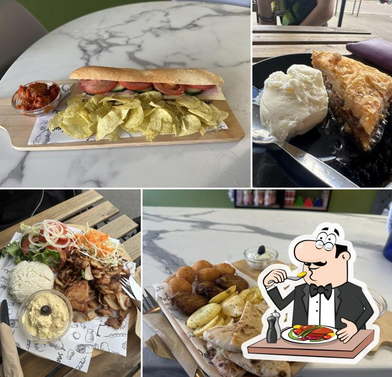
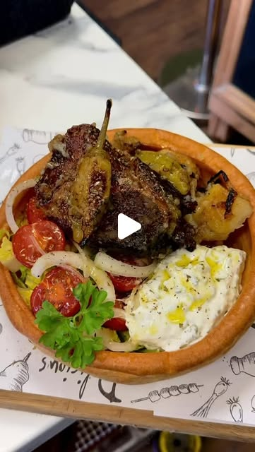
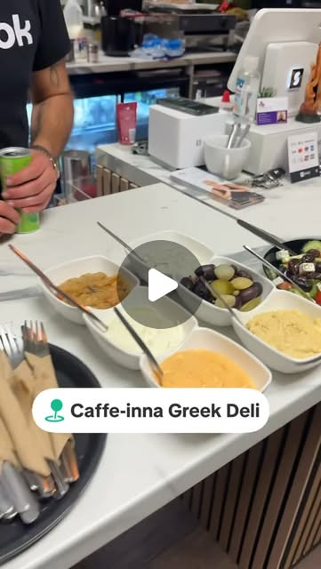
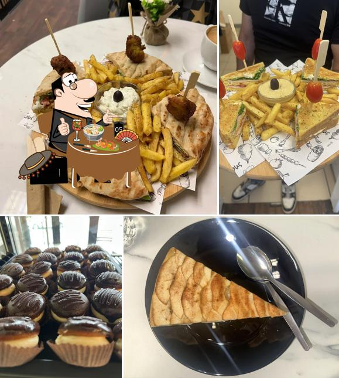
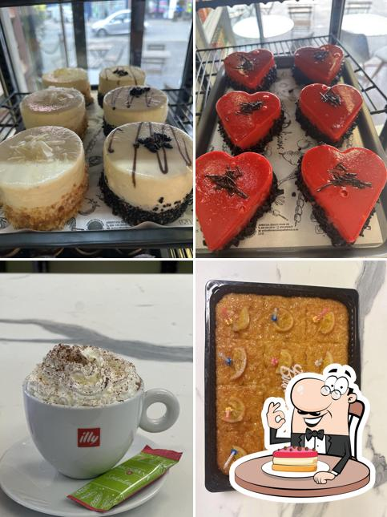
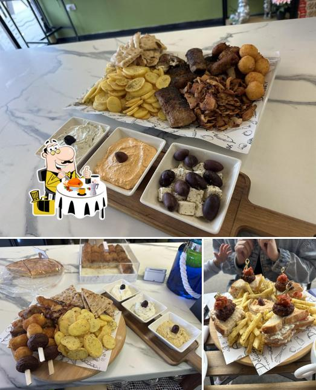
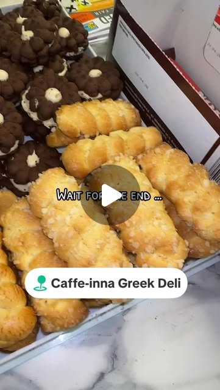

Chicken Gyros Wrap
Most liked on Uber Eats. Fresh Greek gyros with chicken, salad and authentic sauce.
Caffe-inna Greek Deli brings proper coffee, fresh Greek food, gyros, pastries, cakes and warm hospitality to 21 Market Place.
Call To OrderView Favourites
Public reviews describe Caffe-inna as warm, friendly and full of care — the sort of place where people visit for coffee and end up taking home biscuits, pastries or moussaka for later.
The strongest repeat themes are simple and powerful: fantastic coffee, fresh Greek food, lovely owners, relaxed atmosphere and excellent value.
Find us on Maps


The same template style rebuilt for a Greek coffee/deli offer: sit-in coffee, takeaway collection, fresh lunch and social-proof-led menu discovery.
Fantastic coffee, including customer-mentioned coconut latte and biscuits with your cup.
Gyros, moussaka, spinach and feta pasties, dips and comforting Greek deli favourites.
Restaurant Guru lists takeaway available — ideal for call-ahead collection messaging.
Pastries, cakes, homemade biscuits and Greek treats repeatedly praised by customers.
Public reviews repeatedly mention fantastic coffee, fresh Greek food and especially good gyros — exactly the kind of signature combo that deserves to sit above the fold.
Order on Just EatOrder on Uber Eats
“Fantastic coffee and delicious, fresh Greek food — the gyros are especially good. The staff are always friendly and welcoming.”
“Wonderful greek deli and cafe in the centre of Long Eaton. Highly recommend the pastries and feta/pepper dip... Lovely owners.”
“Both the coffee and the biscuits were delicious, for a great price too... service was impeccable... love has been poured into this business.”
“Received a warm and friendly welcome... Spinach and Feta... absolutely delicious — crisp flaky pastry and full of filling. Great coffee too.”
21 Market Pl, Long Eaton, Nottingham NG10 1JL.
ExplorerEats and Restaurant Guru list Monday–Sunday, 10:00–17:00. Final live site should confirm this with the owner.
Just Eat and Uber Eats listings are live, with collection/pickup availability shown publicly. Delivery availability can vary by area and time, so the safest live CTA is order online or call ahead.
Call 0115 667 7676. Public social channels include Instagram @caffeinna2025, Facebook and TikTok @caffeinna5.
Get coffee, pastry and Greek lunch updates from Caffe-inna.
